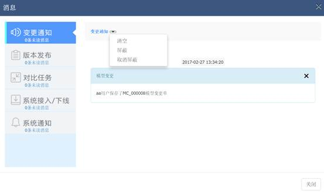

元数据管理系统用户使用手册
元数据管理系统用户使用手册
下面将以【变更通知】为例，说明其他功能：
1. 点击【变更通知】，变更通知出下的【10条未读消息】，将会变为【无未读消息】，这十条信息即视为已读，下次未读消息数中将无这10条。
2. 【变更通知】右侧列表框，显示【变更通知】类目前已读未删除和未读的消息，每条消息有对应的时间、消息题目、消息内容。
3. 删除消息，用户删除消息后，在页面中将不再显示，但数据库中留存记录。
4. 用户还可以选择清空、屏蔽、取消屏蔽某一类消息。具体情况如下：
Ø 情况一：点击【清空】时，系统会提示【即将清空改类型下的所有消息，是否继续？】 。点击【确定】，会清空页面上的此类已有消息。点击【关闭】，则关闭模态框。
Ø 情况二：点击【屏蔽】，系统会提示【是否屏蔽对比任务？】 ，点击【确定】，将会屏蔽此类消息，即不提示也不显示此类消息。点击【关闭】，则关闭模态框。
Ø 情况三：点击【取消屏蔽】，系统会提示【是否解除屏蔽？】 ，点击【确定】，将会取消对此类消息的屏蔽，点击【关闭】，则关闭模态框。操作界面如下所示：
